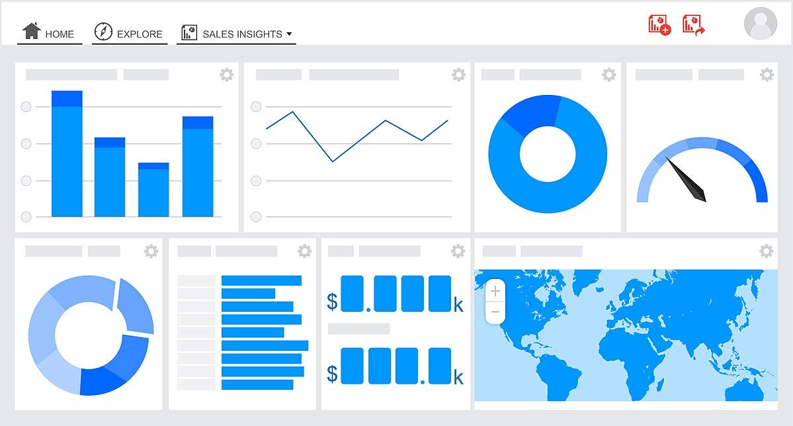
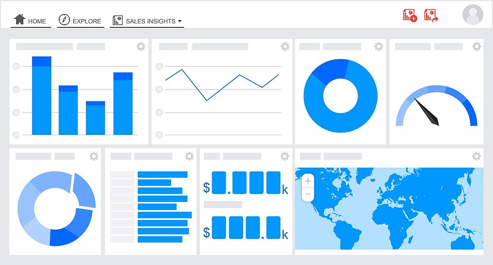
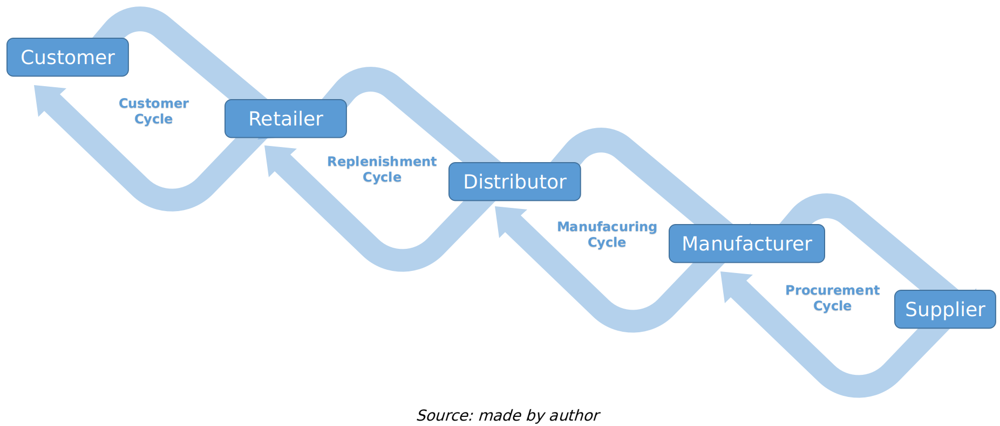
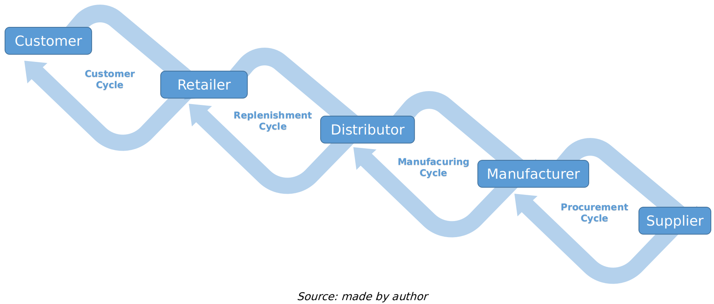

2.1 Introduction
2.2 Significance
2.3 Benefits
2.4 Impact
2.5 Importance

Data visualization is the graphical representation of information and data. Its primary goal is to communicate complex data in an understandable and visually appealing way. Through the use of charts, graphs, maps, and other visual elements, data visualization enables individuals to grasp patterns, trends, and insights that may be challenging to discern from raw data.
Data Visualization, in Information Systems, is a graphical representation either through charts, graphs, infographics, or animations that depict complicated data relationships. It is essential for converting unstructured data into insightful understanding, facilitating business decision-making by simplifying complex data sets.
 

Understanding complex data: By streamlining complex data sets, data visualization helps users better understand the patterns, trends, and outliers that exist in the data set.
Collaboration and communication: By presenting the data in a way that is universally understood, visual representations improve communication within teams. Collaboration between departments and stakeholders is facilitated by it.
Rapid Decision-Making: Decision-makers can respond quickly to shifting market conditions, consumer preferences, and internal procedures thanks to the instant insights provided by visualizations.
Identification of Trends and Patterns: Data visualization tools enable users to identify trends, patterns, and correlations within data sets that might be difficult to discern through raw data alone. By visualizing data, analysts can quickly spot emerging trends allowing businesses to adapt and capitalize on new opportunities.
Improved data analysis: Visualization tools often come with powerful analytical capabilities; users can apply various statistical methods, filters, and algorithms to visualize data, which can help them gain deeper insights. This enhanced analysis helps in understanding customer behavior, market dynamics, and business performance more effectively.
Storytelling with data: Data visualization allows professionals to tell a compelling story with data. By creating interactive and engaging visualizations, complex narratives can be simplified and conveyed to stakeholders. Visualizations can evoke emotions and help people connect with the data, making the information more memorable and impactful.
Forecasting and predictive analysis: Data visualization, coupled with advanced analytic techniques, enables businesses to build predictive models. These models use historical data to forecast future trends, demands, and outcomes. This predictive analysis is valuable for strategic planning and optimizing resources.
Real-time monitoring: With the advent of real-time data visualization tools, businesses can monitor their operations and performance metrics in real-time. This capability is particularly useful in fields like finance, healthcare, and online services, where immediate responses to changing conditions are necessary.
Enhanced user engagement: In fields like digital marketing and social media, visually appealing charts and graphs are essential for engaging audiences. Interactive dashboards and visual reports not only convey information effectively but also enhance user engagement, leading to better customer experiences.
Q. What is data visualization?
A. A graphical representation, either through charts, graphs, infographics, or animations that depict complicated data relationships.
Q. What is one of the advantages of data visualization in identifying trends and patterns?
A. Data visualization tools enable users to quickly spot emerging trends and patterns within data sets that might be challenging to discern through raw data alone.
Q. How does data visualization contribute to improved data analysis?
A. Visualization tools often come with powerful analytical capabilities, allowing users to apply various statistical methods, filters, and algorithms to gain deeper insights into customer behavior, market dynamics, and business performance.
Better data analysis: Businesses can uncover correlations and causes within data sets that may go unnoticed in raw data by using visualization tools to enable in-depth analysis.
Improved interactivity: Users can dynamically explore data with interactive visualizations, drilling down to specific details to obtain a thorough understanding.
Improve reporting: Stakeholders can easily understand complex information when represented in visual reports, which are more compelling and engaging than traditional text-based reports.
Increased efficiency: Data visualization tools allow the automation of reporting processes. Instead of spending hours manually compiling data and creating reports, businesses can automate these tasks using visualization software. This automation saves time and resources, enabling employees to focus on interpreting insights and making data-driven decisions.
Data Exploration and Discovery: Visualization tools enable users to explore data interactively by manipulating charts, graphs, and maps in real-time. Users can discover hidden patterns and outliers. This exploratory approach to data analysis can lead to new insights and a deep understanding of the data, which might not be apparent through traditional analysis methods.
Enhanced communication with non-technical stakeholders: Data visualization simplifies complex data into easy-to-understand visual representations. This is particularly valuable when communicating with non-technical stakeholders, such as clients, investors, or employees from different departments. Visualizations bridge the gaps between technical experts and non-experts, ensuring everyone comprehends the insights derived from the data.
Effective Decision Making: Visualizations provide decision-makers with clear and concise information, making it easier to grasp the implications of various options. Decision-makers can compare scenarios, assess risks, and evaluate outcomes visually, leading to more informed and confident decision-making. This is especially important in industries such as finance, where even small changes can have significant impacts.
Q. What are the benefits of data visualization?
A. Better Data Analysis, improved interactivity, and improved reporting
Q. How do visualization tools contribute to increased efficiency in reporting processes?
A. Data visualization tools allow the automation of reporting processes, saving time and resources by eliminating the need for manual compilation of data and report creation.
Q. In what way does data exploration with visualization tools contribute to the analysis of data?
A. Visualization tools enable users to explore data interactively, manipulating charts, graphs, and maps in real-time. This exploratory approach can lead to the discovery of hidden patterns and outliers, providing a deep understanding of the data.
Strategic Planning: To help with strategic planning and well-informed decision-making, businesses use visualizations to analyze consumer behavior, market trends, and competitive landscapes. For example, a retail business can determine which products are high in demand and adjust inventory levels by using sales data visualizations.
Performance Monitoring: By enabling real-time tracking of key performance indicators, visual data boards assist businesses in tracking advancements and making data-driven decisions that increase productivity. For example, as an illustration, a tech company uses interactive dashboards to track user engagement, website traffic, and conversion rates to improve user experience.
Predictive Analysis: Businesses can make proactive decisions by using data visualization tools in conjunction with advanced analytics to forecast future market demands, customer preferences, and trends.
Supply Chain Optimization: Companies with complex supply chains use data visualizations to monitor the movement of goods, identify bottlenecks, and optimize logistics. Visualization helps in tracking inventory levels, supply performance, and delivery schedules, allowing businesses to streamline their supply chain operations for cost efficiency and timely deliveries. An example would be a manufacturing company uses supply chain visualizations to analyze supplier lead times production schedules and transportation routes ensuring just in time inventory and minimizing storage costs.
Customer Segmentation: Businesses analyze customer data to identify different segments and tailor their marketing strategies accordingly. Data visualization tools help in understanding customer demographics, behaviors, and preferences, allowing companies to create targeted marketing campaigns and personalized customer experiences. An online streaming service, which uses customer segmentation visualizations to analyze viewing habits, allowing them to recommend content personalized to individual user preferences and increasing user engagement would be a good example.
Fraud Detection and Prevention: Financial institutions and e-commerce platforms utilize data visualizations to detect patterns and anomalies in transactions. Visualizations help identify fraudulent activities, enabling companies to implement preventive measures and enhance security protocols. An example would be a credit card company employs visualization tools to analyze transaction patterns, flagging unusual spending behaviors such as multiple large transactions in a short period, which could indicate a stolen card.
Employee Performance Analysis: HR departments use data visualization to assess employee performance, track training initiatives, and identify areas for improvement. Visual representations of employee data assist in workforce planning, talent management, and employee engagement efforts. An example would be a large corporation which uses HR analytics visualizations to track employee productivity, identifying high-performing teams, and allocate resources effectively, leading to improved overall performance and job satisfaction.

Q. True or False Strategic planning, managerial skills and predictive analysis all have an impact on decision making in information systems.
A. False, strategic planning, PERFORMANCE MONITORING, and predictive analysis all have an impact on decision making in information systems.
Q. How do data visualization tools assist in supply chain optimization for businesses with complex supply chains?
A. Data visualizations help monitor the movement of goods, identify bottlenecks, and optimize logistics in complex supply chains. Visualization aids in tracking inventory levels, supply performance, and delivery schedules for cost efficiency and timely deliveries.
Q. In what way do financial institutions use data visualizations to enhance security protocols?
A. Financial institutions use data visualizations to detect patterns and anomalies in transactions, aiding in the identification of fraudulent activities. Visualization tools help in implementing preventive measures and enhancing security protocols, such as flagging unusual spending behaviors to prevent potential fraud.
Financial Data Visualization: This is to help with investment decisions. Financial analysts use visualizations to track stock prices, evaluate investment portfolios, and spot trends in market fluctuations. For example, it is used to guide investment strategies. A hedge fund manager examines historical stock prices and forecasts market movements using interactive charts.
Healthcare Analytics: By visualizing patient data, healthcare providers can track treatment outcomes, spot patterns in diseases, and allocate resources more efficiently, all of which can improve patient care. For example, a hospital analyzes patient demographics, treatment effectiveness, and readmission rates using visualizations to lower costs and improve patient care.
Supply Chain Optimization: To ensure efficient operations and reduce costs, businesses use supply chain visualizations to track inventory levels, supply performance, and delivery schedules. For example, a manufacturing company uses supply chain visualizations to pinpoint production schedules, identify bottlenecks, cut lead times, and enhance overall efficiency.
Sales and Marketing: Sales Performance Analysis: Sales teams use data visualizations to analyze sales data, track venue revenue, and identify sales trends. Visualizations help in understanding which products are performing well, which regions have high sales, and which sales representatives are most effective. For example, a retail chain uses sales data visualizations to compare sales figures across different stores. By identifying the highest and lowest performing stores, the company can allocate resources effectively and implement targeted marketing strategies.
Customer Journey Mapping: Marketers visualize customer interactions and touchpoints across various channels. Understanding the customer journey helps businesses optimize marketing campaigns, improve customer experiences, and enhance customer satisfaction. For example, an e-commerce company uses customer journey visualizations to analyze the path customers take from browsing products to making a purchase. By optimizing drop-off points, they can optimize the website layout and streamline the checkout process.
Human Resources and Employee Management: Workforce Analytics: HR professionals use data visualization to analyze employee data, including performance metrics, turnover rates, and training effectiveness. Visualizations help in strategic workforce planning, talent management, and succession planning. For example, a multinational company uses HR analytics visualizations to track employee engagement scores. By identifying departments with low engagement, HR can implement targeted initiatives to improve workplace satisfaction and productivity.
Recruitment Analysis: Visualizing recruitment data, such as applicant sources, time-to-hire, and candidate demographics, helps HR teams optimize their recruitment strategies. By understanding which sources yield the best candidates, companies can focus their efforts on the most effective channels. For example, a technology company uses recruitment data visualizations to compare the effectiveness of different job portals, by analyzing the quality of applicants sourced from each portal. HR can allocate recruitment budgets efficiently.
Educational Institutions: Student Performance Analysis: Educational institutions use data visualizations to track student academic performance, attendance patterns, and engagement levels. Visualizations help educators identify at-risk students, evaluate teaching methods, and enhance learning outcomes. For example, a school district uses student performance visualizations to analyze exam scores across different subjects and grades, by identifying subjects where students struggle the most, educators can provide additional support and resources in those areas.
 

Q. How do healthcare providers utilize data visualizations to improve patient care?
A. By visualizing patient data, healthcare providers track treatment outcomes, spot disease patterns, and allocate resources more efficiently, ultimately improving patient care.
Q. How can sales teams benefit from data visualizations in the context of sales performance analysis?
A. Sales teams use data visualizations to analyze sales data, track venue revenue, and identify sales trends. This helps understand product performance, regional sales variations, and the effectiveness of sales representatives.
Q. In what way do businesses use data visualizations for supply chain optimization?
A. Businesses utilize supply chain visualizations to track inventory levels, supply performance, and delivery schedules, ensuring efficient operations and cost reduction. For instance, a manufacturing company may use visualizations to pinpoint production schedules and identify bottlenecks.